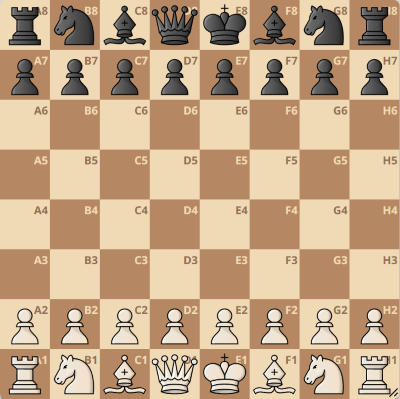

Home
•
Klubben
•
Medlemmar
•
Christer Nilsson
Terrängschack
| Svart: Axel Ornstein | 2149 | 1:30:00 |
 |
||
| Vit: Lars Karlsson | 2403 | 1:30:00 |
| Bäring: | 60° |
| Avstånd: | 93 meter |
| Ruta: | g3 |
| Ålder: | 1 minut |
Terrängschack spelas av två lag med vardera fyra deltagare
Varje deltagare möter en annan deltagare
För att ett drag ska gälla, måste både startruta och slutruta besökas
- Deltagarna hjälper varandra med detta
För att ett lag ska vinna behöver deltagarna
- springa snabbare än motståndarna
- välja bättre väg genom terrängen
- spela bra drag snabbare än motståndarna
- samarbeta bättre än motståndarlaget, genom att besöka rutorna så snabbt som möjligt
Storleken på en schackruta kan t ex vara etthundra meter
- Storleken på brädet blir då 400 meter
Varje spelare ansvarar för en kvadrant av brädet, dvs sexton rutor
- abcd x 1234
- abcd x 5678
- efgh x 1234
- efgh x 5678
Varje deltagare behöver ha
- en kompass
- en laddad mobil (eventuellt med fodral och headset)